1088E11 FANS WITH SINGLE ENGINE DUCT - R+R
- Path
- Procedures > 10 ENGINE > 1088 ENGINE COOLING > 1088E COOLANT TEMPERATURE CONTROL DEVICES > 1088E11 FANS WITH SINGLE ENGINE DUCT - R+R
- Kind
- repair procedure (removal / refitting; the operation number is the code)
- Applies to
- engines: 2.2, 1.9 JTD 8v, 1.9 JTD 16v, 2.4 JTD 20v; all production periods
- Interactive page
- https://sloeber94.github.io/elrnDB-fCrm/en/#/194000411
Applies to: engines: 2.2; all production periods
 Removing
Removing
 Refitting
Refitting- Position the vehicle on a lift.
- Make sure that the ignition key is in the OFF position, then disconnect the battery terminal (-).
Description | Connector | |
|---|---|---|
- | Battery |
1. Remove the soundproof cover secured to the engine by three pins.
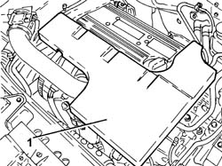
Applies to: engines: 2.2; all production periods
Op. 7055B54 UNDER ENGINE PROTECTION/GUARD - R.R.
1. Loosen the band and disconnect the engine oil vapour recovery pipe from the cylinder head cover.
2. Loosen the bands and remove the air delivery sleeve from the air flow meter to the throttle body.
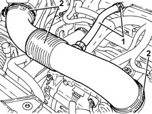
Applies to: engines: 2.2; all production periods
1. Remove the cold air intake complete with protective half-shells.
2. Undo the bolts (2a) and remove the radiator crossmember upper protection (2b).
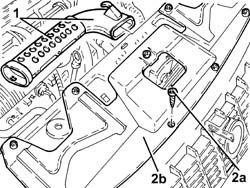
Applies to: engines: 2.2; all production periods
1. Disconnect the cold air intake pipe and remove.
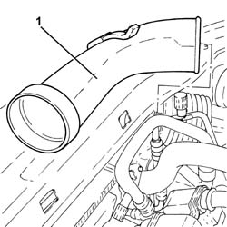
Applies to: engines: 2.2; all production periods
1. Disconnect electrical connection (1a) from the fans, then release the electrical wiring (1b) from the fastenings and move aside.
Description | Connector | |
|---|---|---|
1a | Engine fan motor |
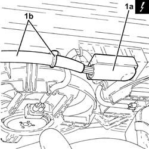
Applies to: engines: 2.2; all production periods
1. Undo the bolts (1a) and remove the fans with the engine cooling shroud 1b).
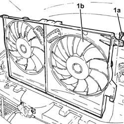
Applies to: engines: 2.2; all production periods
1. Working at the bench, disconnect the electrical connections (1a) and (1b) from the fans.
Description | Connector | |
|---|---|---|
1a | Engine fan motor |
Description | Connector | |
|---|---|---|
1b | Engine fan motor -2 | See N012 |
2. Undo bolts (2a) and separate fans (2b) from shroud (2c).
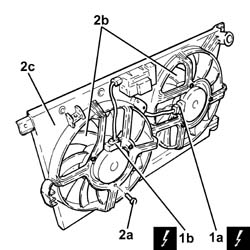
Applies to: engines: 2.2; all production periods
Refitting
Removing- Position the fans in their seats on the shroud and secure them using the fixing bolts.
- Connect the electrical connections for the fans.
- Replace the fans with the single engine cooling shroud in their housings in their seats and secure them using the bolts.
- Replace the electrical wiring, then connect the electrical connection to the fans.
- Refit the cold air intake pipe.
- Place the upper radiator crossmember protection back in its housing and secure it using the bolts.
- Replace the cold air intake complete with protective half-shells.
- Replace the air delivery sleeve from the air flow meter to the throttle valve in its housing, connect it and tighten the bands.
- Connect the engine oil vapour recovery pipe to the cylinder head cover and secure it using the band.
Op. 7055B54 UNDER ENGINE PROTECTION/GUARD - R.R.
- Refit the soundproofing cover in its seat and secure to the engine with the three pins.
- Connect the negative battery terminal.
- Remove the vehicle from the lift.
Applies to: engines: 1.9 JTD 8v, 1.9 JTD 16v; all production periods
Removing
Refitting- Position the vehicle on a lift.
Op. 1016A10 SOUND-PROOFING COVER - R.R
Op. 1048B19 TURBOCHARGER AIR OUTLET HOSE -R.R.
Op. 1048A42 SLEEVE FROM FLOW METER TO TURBO CHARGER AIR INLET PIPE - R + R
Op. 7055B54 UNDER ENGINE PROTECTION/GUARD - R.R.
Op. 1048B17 HEAT EXCHANGER AIR INLET HOSE - R.R.
Op. 7040D30 ENGINE BAY FRONT BEAM COVER - R R
Op. 1048B10 RIGID SUPPLY PIPE (ONE) BETWEEN TURBOCHARGER AND HEAT EXCHANGER -R.R.
Op. 0010T84 COOLANT FOR AIR CONDITIONING SYSTEM - DEHYDRATE AND REPRESSURIZE
Op. 5530B52 BATTERY SUPPORT/DRIP TRAY - R.R
Op. 1048B20 AIR SUPPLY HOSE FROM HEAT EXCHANGER TO RIGID PIPE - REPLACE
Op. 1064B42 SOLENOID CONTROLLING TURBOCHARGER VANE POSITION ACTUATOR - R.R
1. Undo the nut (1a) and disconnect the air conditioning pipe (1b) from the drier filter.
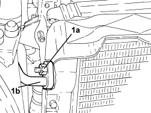
Applies to: engines: 1.9 JTD 8v, 1.9 JTD 16v; all production periods
1. Undo the nut (1a) and disconnect the air conditioning system pipes intermediate flange (1b).
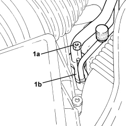
Applies to: engines: 1.9 JTD 8v, 1.9 JTD 16v; all production periods
1. Undo the radiator coolant drain plug.
2. Loosen the band and disconnect the lower coolant outlet hose from the radiator, radiator side.
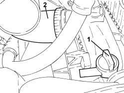
Applies to: engines: 1.9 JTD 8v, 1.9 JTD 16v; all production periods
1. Loosen the band (1a) and disconnect the radiator upper coolant inlet hose (1b), radiator side.
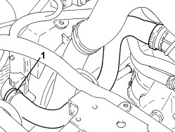
Applies to: engines: 1.9 JTD 8v, 1.9 JTD 16v; all production periods
- Disconnect the electrical connection from the fans, then release the electrical wiring from the fastenings and move it aside.
Description | Connector | |
|---|---|---|
- | Engine fan motor |
1. Position a hydraulic jack beneath the engine cooling radiator.
2. Undo the bolts fixing the engine cooling radiator supports to the front suspension frame.
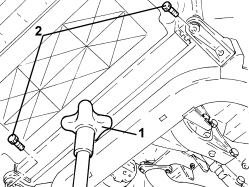
Applies to: engines: 1.9 JTD 8v, 1.9 JTD 16v; all production periods
- Lower the hydraulic jack and remove the fans and engine cooling single duct complete with engine cooling radiator, heat exchanger and air conditioning condenser.
1. Working at the bench, undo the bolts (1a) and release the fans with the single engine cooling duct (1b) from the radiator.
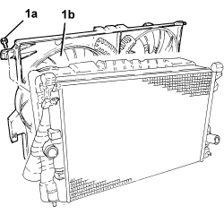
Applies to: engines: 1.9 JTD 8v, 1.9 JTD 16v; all production periods
1. Working at the bench, disconnect the electrical connections (1a) and (1b) from the fans.
Description | Connector | |
|---|---|---|
1a | Engine fan motor |
Description | Connector | |
|---|---|---|
1b | Engine fan motor -2 | See N012 ENGINE FAN MOTOR 2 |
2. Undo bolts (2a) and separate fans (2b) from shroud (2c).
Applies to: engines: 1.9 JTD 8v, 1.9 JTD 16v; all production periods
Refitting
Removing- Position the fans in their seats on the shroud and secure them using the fixing bolts.
- Connect the electrical connections for the fans.
- Place the fans and engine cooling single duct complete with engine cooling radiator, heat exchanger and air conditioning condenser back in their housings.
- Tighten the bolts fixing the engine cooling radiator supports to the front suspension frame.
- Remove the hydraulic jack from underneath the engine coolant radiator.
- Connect the electrical connection to the fans, then secure the electrical wiring.
- Connect the upper coolant inlet hose to the radiator, radiator side, and tighten the band.
- Connect the radiator lower coolant outlet hose, radiator side, and tighten the band.
- Tighten the coolant drain plug to the radiator.
1. Connect the air conditioning system pipe intermediate flange (1a) and tighten the nut (1b) to the recommended torque.
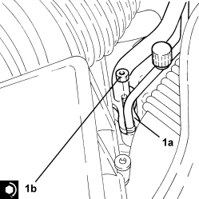
Applies to: engines: 1.9 JTD 8v, 1.9 JTD 16v; all production periods
1. Connect the air conditioning pipe (1a) to the drier filter and tighten the nut (1b) to the recommended torque.
Component | Fastening | dia | Value (daNm) | Validity |
|---|---|---|---|---|
COMPRESSOR/CONDENSER PIPE ON CONDENSER | Nut | M8 | 1,8 ÷ 2,0 |
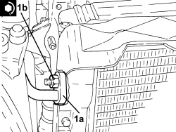
Applies to: engines: 1.9 JTD 8v, 1.9 JTD 16v; all production periods
Op. 1064B42 SOLENOID CONTROLLING TURBOCHARGER VANE POSITION ACTUATOR - R.R
Op. 1048B20 AIR SUPPLY HOSE FROM HEAT EXCHANGER TO RIGID PIPE - REPLACE
Op. 5530B52 BATTERY SUPPORT/DRIP TRAY - R.R
Op. 0010T84 COOLANT FOR AIR CONDITIONING SYSTEM - DEHYDRATE AND REPRESSURIZE
Op. 1048B10 RIGID SUPPLY PIPE (ONE) BETWEEN TURBOCHARGER AND HEAT EXCHANGER -R.R.
Op. 7040D30 ENGINE BAY FRONT BEAM COVER - R R
Op. 1048B17 HEAT EXCHANGER AIR INLET HOSE - R.R.
Op. 1048A42 SLEEVE FROM FLOW METER TO TURBO CHARGER AIR INLET PIPE - R + R
Op. 1048B19 TURBOCHARGER AIR OUTLET HOSE -R.R.
Op. 1016A10 SOUND-PROOFING COVER - R.R
Op. 0010T20 ENGINE COOLANT - CHANGE
Op. 7055B54 UNDER ENGINE PROTECTION/GUARD - R.R.
- Remove the vehicle from the lift.
Applies to: engines: 2.4 JTD 20v; all production periods
Removing
RefittingOp. 0010T20 ENGINE COOLANT - CHANGE
Op. 0010T84 COOLANT FOR AIR CONDITIONING SYSTEM - DEHYDRATE AND REPRESSURIZE
Op. 5530B52 BATTERY SUPPORT/DRIP TRAY - R.R
Op. 7040D30 ENGINE BAY FRONT BEAM COVER - R R
Op. 7055A43 CENTRE FRONT GRILLE - R.R.
Op. 7055B90 LEFT FRONT WHEEL ARCH LINER - R.R.
Op. 7055B91 RIGHT FRONT WHEEL ARCH LINER - R.R.
Applies to: engines: 2.4 JTD 20v; all production periods
Refitting
RemovingOp. 1088B20 ENGINE COOLING RADIATOR - R + R
Op. 1084C40 AIR DUCT FOR ENGINE OIL COOLING RADIATOR - R.R.
Op. 7055B91 RIGHT FRONT WHEEL ARCH LINER - R.R.
Op. 7055B90 LEFT FRONT WHEEL ARCH LINER - R.R.
Op. 7055A43 CENTRE FRONT GRILLE - R.R.
Op. 7040D30 ENGINE BAY FRONT BEAM COVER - R R
Op. 5530B52 BATTERY SUPPORT/DRIP TRAY - R.R
Op. 0010T84 COOLANT FOR AIR CONDITIONING SYSTEM - DEHYDRATE AND REPRESSURIZE
Topics linked from this page (21)
- 0010T20 ENGINE COOLANT - CHANGE
- 0010T84 COOLANT FOR AIR CONDITIONING SYSTEM - DEHYDRATE AND REPRESSURIZE
- 1016A10 SOUND-PROOFING COVER - R.R
- 1048A42 SLEEVE FROM FLOW METER TO TURBO CHARGER AIR INLET PIPE - R + R
- 1048B10 RIGID SUPPLY PIPE (ONE) BETWEEN TURBOCHARGER AND HEAT EXCHANGER -R.R.
- 1048B17 HEAT EXCHANGER AIR INLET HOSE - R.R.
- 1048B19 TURBOCHARGER AIR OUTLET HOSE -R.R.
- 1048B20 AIR SUPPLY HOSE FROM HEAT EXCHANGER TO RIGID PIPE - REPLACE
- 1064B42 SOLENOID CONTROLLING TURBOCHARGER VANE POSITION ACTUATOR - R.R
- 1084C40 AIR DUCT FOR ENGINE OIL COOLING RADIATOR - R.R.
- 1088B20 ENGINE COOLING RADIATOR - R + R
- 5530B10 BATTERY - R+R
- 5530B52 BATTERY SUPPORT/DRIP TRAY - R.R
- 7040D30 ENGINE BAY FRONT BEAM COVER - R R
- 7055A43 CENTRE FRONT GRILLE - R.R.
- 7055B54 UNDER ENGINE PROTECTION/GUARD - R.R.
- 7055B90 LEFT FRONT WHEEL ARCH LINER - R.R.
- 7055B91 RIGHT FRONT WHEEL ARCH LINER - R.R.
- 7210E10 R.R. FRONT BUMPER
- A001 BATTERY
- N011 ENGINE FAN MOTOR